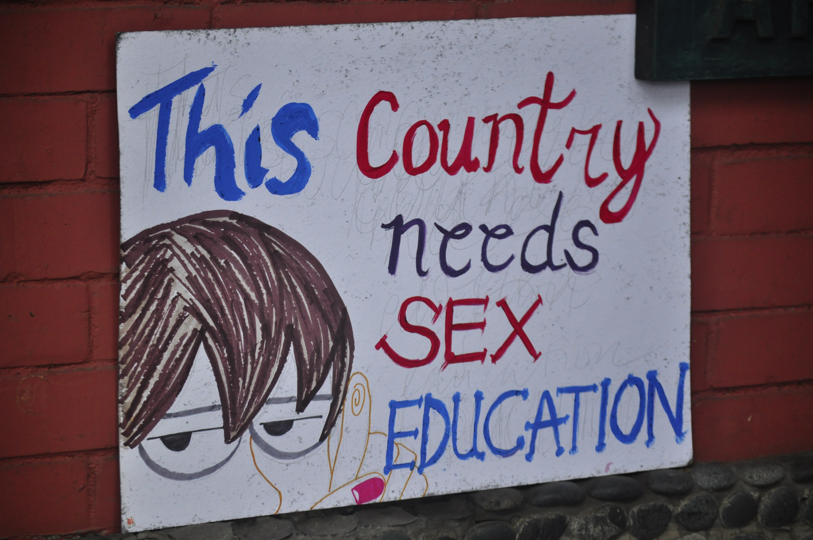

Despite the important role adolescent and young adult men play in preventing teen pregnancy, few evidence-based interventions are designed specifically for young men. Data suggest that teen fathers attend fewer years of school and are less likely to graduate from high school.
Eighty percent of young men aged 15–19 years report that they would be very upset or a little upset if they were to get a female pregnant.
The primary focus is piloting a training and tool kit for youth-serving professionals to inform young men about the importance of reproductive health and refer young men to reproductive health services in order to reduce premature fatherhood
The Contraceptive Action Plan (CAP) is a step-by-step process for strengthening healthcare delivery systems to enhance contraceptive services.
CAP uses a systematic approach to support to healthcare providers in facilitating improvements. The CAP package contains all the tools and training resources necessary to assess current capacity, identify gaps in care, and build on unique strengths to implement or enhance contraceptive services in any healthcare setting. This includes e-Learning modules for all staff levels, implementation tools, job aids, and a clinician mentoring toolkit.
According to Dr Ravhee Bholah, Sex Education is crucial in schools: “Students must have proper understanding of their own bodies. This is necessary for diverse reasons: an increase incidence of sexually transmitted infection (HIV/AIDS), an increase in teenage pregnancy, increased prevalence of other diseases (cervical cancer and breast cancer). It is also important for the youth to know how to deal with unintended pregnancy and be aware of the different types and use of contraceptives.’’
